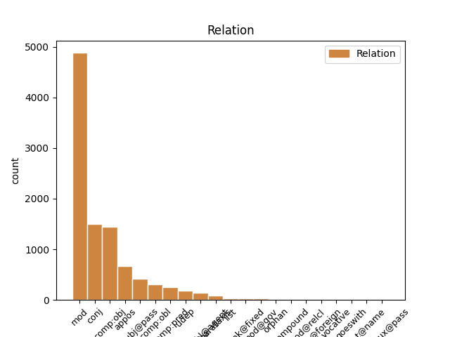
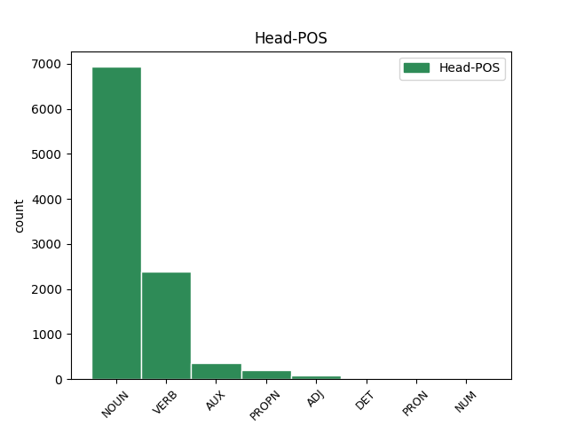
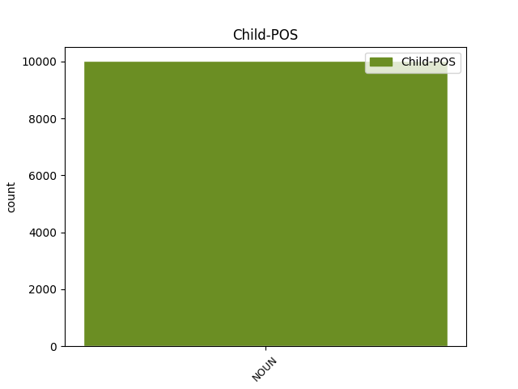

Distribution of features within this leaf



Agreement Rules sorted by frequency.
- When the dependent token is the modifer(mod) of the head token, and the dependent token is NOUN.
1 Контролируемый _ _ _ _ 0 _ _ _
2 интерфейсом _ _ _ _ 0 _ _ _
3 захвата захват NOUN NN Animacy=Inan|Case=Gen|Gender=Masc|Number=Sing 0 _ _ _
4 движения движение NOUN NN Animacy=Inan|Case=Gen|Gender=Neut|Number=Sing 3 mod _ SpaceAfter=No
5 , _ _ _ _ 0 _ _ _
6 Geminoid _ _ _ _ 0 _ _ _
7 HI _ _ _ _ 0 _ _ _
8 - _ _ _ _ 0 _ _ _
9 1 _ _ _ _ 0 _ _ _
10 Может _ _ _ _ 0 _ _ _
11 имитировать _ _ _ _ 0 _ _ _
12 тело _ _ _ _ 0 _ _ _
13 Исигуро _ _ _ _ 0 _ _ _
14 и _ _ _ _ 0 _ _ _
15 мимикой _ _ _ _ 0 _ _ _
16 , _ _ _ _ 0 _ _ _
17 и _ _ _ _ 0 _ _ _
18 он _ _ _ _ 0 _ _ _
19 может _ _ _ _ 0 _ _ _
20 воспроизводить _ _ _ _ 0 _ _ _
21 голос _ _ _ _ 0 _ _ _
22 синхронно _ _ _ _ 0 _ _ _
23 с _ _ _ _ 0 _ _ _
24 его _ _ _ _ 0 _ _ _
25 движениями _ _ _ _ 0 _ _ _
26 и _ _ _ _ 0 _ _ _
27 осанку _ _ _ _ 0 _ _ _
28 . _ _ _ _ 0 _ _ _
1 Контролируемый _ _ _ _ 0 _ _ _
2 интерфейсом _ _ _ _ 0 _ _ _
3 захвата _ _ _ _ 0 _ _ _
4 движения _ _ _ _ 0 _ _ _
5 , _ _ _ _ 0 _ _ _
6 Geminoid _ _ _ _ 0 _ _ _
7 HI _ _ _ _ 0 _ _ _
8 - _ _ _ _ 0 _ _ _
9 1 _ _ _ _ 0 _ _ _
10 Может _ _ _ _ 0 _ _ _
11 имитировать _ _ _ _ 0 _ _ _
12 тело _ _ _ _ 0 _ _ _
13 Исигуро _ _ _ _ 0 _ _ _
14 и _ _ _ _ 0 _ _ _
15 мимикой _ _ _ _ 0 _ _ _
16 , _ _ _ _ 0 _ _ _
17 и _ _ _ _ 0 _ _ _
18 он _ _ _ _ 0 _ _ _
19 может _ _ _ _ 0 _ _ _
20 воспроизводить _ _ _ _ 0 _ _ _
21 голос голос NOUN NN Animacy=Inan|Case=Acc|Gender=Masc|Number=Sing 0 _ _ _
22 синхронно _ _ _ _ 0 _ _ _
23 с _ _ _ _ 0 _ _ _
24 его _ _ _ _ 0 _ _ _
25 движениями _ _ _ _ 0 _ _ _
26 и _ _ _ _ 0 _ _ _
27 осанку осанка NOUN NN Animacy=Inan|Case=Acc|Gender=Fem|Number=Sing 21 conj _ SpaceAfter=No
28 . _ _ _ _ 0 _ _ _
1 `` _ _ _ _ 0 _ _ _
2 Адад _ _ _ _ 0 _ _ _
3 потомство потомство NOUN NN Animacy=Inan|Case=Acc|Gender=Neut|Number=Sing 4 comp:obj _ _
4 храни хранить VERB VBC Aspect=Imp|Mood=Imp|Number=Sing|Person=2|VerbForm=Fin|Voice=Act 0 _ _ _
5 '' _ _ _ _ 0 _ _ _
6 ; _ _ _ _ 0 _ _ _
7 dIM _ _ _ _ 0 _ _ _
8 , _ _ _ _ 0 _ _ _
9 MU _ _ _ _ 0 _ _ _
10 , _ _ _ _ 0 _ _ _
11 ŠEŠ _ _ _ _ 0 _ _ _
12 или _ _ _ _ 0 _ _ _
13 mdIM _ _ _ _ 0 _ _ _
14 , _ _ _ _ 0 _ _ _
15 MU _ _ _ _ 0 _ _ _
16 , _ _ _ _ 0 _ _ _
17 ŠEŠ _ _ _ _ 0 _ _ _
18 ) _ _ _ _ 0 _ _ _
19 -- _ _ _ _ 0 _ _ _
20 касситский _ _ _ _ 0 _ _ _
21 царь _ _ _ _ 0 _ _ _
22 Вавилонии _ _ _ _ 0 _ _ _
23 , _ _ _ _ 0 _ _ _
24 правил _ _ _ _ 0 _ _ _
25 приблизительно _ _ _ _ 0 _ _ _
26 в _ _ _ _ 0 _ _ _
27 1219 _ _ _ _ 0 _ _ _
28 -- _ _ _ _ 0 _ _ _
29 1188 _ _ _ _ 0 _ _ _
30 годах _ _ _ _ 0 _ _ _
31 до _ _ _ _ 0 _ _ _
32 н. _ _ _ _ 0 _ _ _
33 э _ _ _ _ 0 _ _ _
34 . _ _ _ _ 0 _ _ _
1 Протагонист _ _ _ _ 0 _ _ _
2 игры _ _ _ _ 0 _ _ _
3 -- _ _ _ _ 0 _ _ _
4 Эш Эш PROPN NNP Animacy=Anim|Case=Nom|Gender=Masc|Number=Sing 0 _ _ _
5 , _ _ _ _ 0 _ _ _
6 персонаж персонаж NOUN NN Animacy=Anim|Case=Nom|Gender=Masc|Number=Sing 4 appos _ _
7 трилогии _ _ _ _ 0 _ _ _
8 Зловещие _ _ _ _ 0 _ _ _
9 мертвецы _ _ _ _ 0 _ _ _
10 . _ _ _ _ 0 _ _ _
1 В _ _ _ _ 0 _ _ _
2 те _ _ _ _ 0 _ _ _
3 годы _ _ _ _ 0 _ _ _
4 в _ _ _ _ 0 _ _ _
5 селе _ _ _ _ 0 _ _ _
6 был _ _ _ _ 0 _ _ _
7 птичник _ _ _ _ 0 _ _ _
8 и _ _ _ _ 0 _ _ _
9 разбит разбить VERB VBNH Animacy=Inan|Aspect=Perf|Case=Nom|Gender=Masc|Number=Sing|Tense=Past|Variant=Short|VerbForm=Part|Voice=Pass 0 _ _ _
10 колхозный _ _ _ _ 0 _ _ _
11 сад сад NOUN NN Animacy=Inan|Case=Nom|Gender=Masc|Number=Sing 9 subj@pass _ SpaceAfter=No
12 . _ _ _ _ 0 _ _ _
1 Основная _ _ _ _ 0 _ _ _
2 аудитория _ _ _ _ 0 _ _ _
3 геосоциального _ _ _ _ 0 _ _ _
4 сервиса _ _ _ _ 0 _ _ _
5 AlterGeo _ _ _ _ 0 _ _ _
6 -- _ _ _ _ 0 _ _ _
7 молодые _ _ _ _ 0 _ _ _
8 общительные _ _ _ _ 0 _ _ _
9 люди _ _ _ _ 0 _ _ _
10 , _ _ _ _ 0 _ _ _
11 которые _ _ _ _ 0 _ _ _
12 активно _ _ _ _ 0 _ _ _
13 пользуются _ _ _ _ 0 _ _ _
14 Интернетом _ _ _ _ 0 _ _ _
15 и _ _ _ _ 0 _ _ _
16 социальными _ _ _ _ 0 _ _ _
17 сетями _ _ _ _ 0 _ _ _
18 , _ _ _ _ 0 _ _ _
19 являются являться VERB VBC Aspect=Imp|Mood=Ind|Number=Plur|Person=3|Tense=Pres|VerbForm=Fin|Voice=Mid 0 _ _ _
20 лидерами лидер NOUN NN Animacy=Anim|Case=Ins|Gender=Masc|Number=Plur 19 comp:pred _ _
21 мнений _ _ _ _ 0 _ _ _
22 , _ _ _ _ 0 _ _ _
23 с _ _ _ _ 0 _ _ _
24 уровнем _ _ _ _ 0 _ _ _
25 дохода _ _ _ _ 0 _ _ _
26 выше _ _ _ _ 0 _ _ _
27 среднего _ _ _ _ 0 _ _ _
28 ( _ _ _ _ 0 _ _ _
29 имеют _ _ _ _ 0 _ _ _
30 современный _ _ _ _ 0 _ _ _
31 мобильный _ _ _ _ 0 _ _ _
32 телефон _ _ _ _ 0 _ _ _
33 , _ _ _ _ 0 _ _ _
34 ноутбук _ _ _ _ 0 _ _ _
35 ) _ _ _ _ 0 _ _ _
36 , _ _ _ _ 0 _ _ _
37 живут _ _ _ _ 0 _ _ _
38 в _ _ _ _ 0 _ _ _
39 мегаполисах _ _ _ _ 0 _ _ _
40 , _ _ _ _ 0 _ _ _
41 любят _ _ _ _ 0 _ _ _
42 встречаться _ _ _ _ 0 _ _ _
43 с _ _ _ _ 0 _ _ _
44 друзьями _ _ _ _ 0 _ _ _
45 и _ _ _ _ 0 _ _ _
46 посещать _ _ _ _ 0 _ _ _
47 новые _ _ _ _ 0 _ _ _
48 интересные _ _ _ _ 0 _ _ _
49 места _ _ _ _ 0 _ _ _
50 . _ _ _ _ 0 _ _ _
1 Эксергия _ _ _ _ 0 _ _ _
2 ( _ _ _ _ 0 _ _ _
3 эксэргия _ _ _ _ 0 _ _ _
4 ; _ _ _ _ 0 _ _ _
5 от _ _ _ _ 0 _ _ _
6 , _ _ _ _ 0 _ _ _
7 -- _ _ _ _ 0 _ _ _
8 приставка _ _ _ _ 0 _ _ _
9 , _ _ _ _ 0 _ _ _
10 означающая _ _ _ _ 0 _ _ _
11 высокую _ _ _ _ 0 _ _ _
12 степень _ _ _ _ 0 _ _ _
13 , _ _ _ _ 0 _ _ _
14 и _ _ _ _ 0 _ _ _
15 -- _ _ _ _ 0 _ _ _
16 работа _ _ _ _ 0 _ _ _
17 ) _ _ _ _ 0 _ _ _
18 -- _ _ _ _ 0 _ _ _
19 часть _ _ _ _ 0 _ _ _
20 энергии _ _ _ _ 0 _ _ _
21 , _ _ _ _ 0 _ _ _
22 равная равный ADJ JJL Case=Nom|Degree=Pos|Gender=Fem|Number=Sing 0 _ _ _
23 максимальной _ _ _ _ 0 _ _ _
24 полезной _ _ _ _ 0 _ _ _
25 работе работа NOUN NN Animacy=Inan|Case=Dat|Gender=Fem|Number=Sing 22 comp:obl _ SpaceAfter=No
26 , _ _ _ _ 0 _ _ _
27 которую _ _ _ _ 0 _ _ _
28 может _ _ _ _ 0 _ _ _
29 совершить _ _ _ _ 0 _ _ _
30 термодинамическая _ _ _ _ 0 _ _ _
31 система _ _ _ _ 0 _ _ _
32 при _ _ _ _ 0 _ _ _
33 переходе _ _ _ _ 0 _ _ _
34 из _ _ _ _ 0 _ _ _
35 данного _ _ _ _ 0 _ _ _
36 состояния _ _ _ _ 0 _ _ _
37 в _ _ _ _ 0 _ _ _
38 состояние _ _ _ _ 0 _ _ _
39 равновесия _ _ _ _ 0 _ _ _
40 с _ _ _ _ 0 _ _ _
41 окружающей _ _ _ _ 0 _ _ _
42 средой _ _ _ _ 0 _ _ _
43 . _ _ _ _ 0 _ _ _
1 Через _ _ _ _ 0 _ _ _
2 две _ _ _ _ 0 _ _ _
3 недели _ _ _ _ 0 _ _ _
4 в _ _ _ _ 0 _ _ _
5 ответном _ _ _ _ 0 _ _ _
6 поединке _ _ _ _ 0 _ _ _
7 на _ _ _ _ 0 _ _ _
8 стадионе _ _ _ _ 0 _ _ _
9 `` _ _ _ _ 0 _ _ _
10 Гролс _ _ _ _ 0 _ _ _
11 Весте _ _ _ _ 0 _ _ _
12 '' _ _ _ _ 0 _ _ _
13 голландцы _ _ _ _ 0 _ _ _
14 одержали _ _ _ _ 0 _ _ _
15 верх _ _ _ _ 0 _ _ _
16 со _ _ _ _ 0 _ _ _
17 счётом _ _ _ _ 0 _ _ _
18 2 _ _ _ _ 0 _ _ _
19 : _ _ _ _ 0 _ _ _
20 1 _ _ _ _ 0 _ _ _
21 , _ _ _ _ 0 _ _ _
22 `` _ _ _ _ 0 _ _ _
23 Шериф _ _ _ _ 0 _ _ _
24 '' _ _ _ _ 0 _ _ _
25 владел владеть VERB VBC Aspect=Imp|Gender=Masc|Mood=Ind|Number=Sing|Tense=Past|VerbForm=Fin|Voice=Act 0 _ _ _
26 инициативой _ _ _ _ 0 _ _ _
27 большую _ _ _ _ 0 _ _ _
28 часть часть NOUN NN Animacy=Inan|Case=Acc|Gender=Fem|Number=Sing 25 udep _ _
29 матча _ _ _ _ 0 _ _ _
30 , _ _ _ _ 0 _ _ _
31 но _ _ _ _ 0 _ _ _
32 не _ _ _ _ 0 _ _ _
33 сумел _ _ _ _ 0 _ _ _
34 набрать _ _ _ _ 0 _ _ _
35 даже _ _ _ _ 0 _ _ _
36 одного _ _ _ _ 0 _ _ _
37 очка _ _ _ _ 0 _ _ _
38 , _ _ _ _ 0 _ _ _
39 пропустив _ _ _ _ 0 _ _ _
40 решающий _ _ _ _ 0 _ _ _
41 мяч _ _ _ _ 0 _ _ _
42 на _ _ _ _ 0 _ _ _
43 89-й _ _ _ _ 0 _ _ _
44 минуте _ _ _ _ 0 _ _ _
45 . _ _ _ _ 0 _ _ _
1 Контролируемый контролировать VERB VBNL Animacy=Inan|Aspect=Imp|Case=Nom|Gender=Masc|Number=Sing|Tense=Pres|VerbForm=Part|Voice=Pass 0 _ _ _
2 интерфейсом интерфейс NOUN NN Animacy=Inan|Case=Ins|Gender=Masc|Number=Sing 1 comp:obl@agent _ _
3 захвата _ _ _ _ 0 _ _ _
4 движения _ _ _ _ 0 _ _ _
5 , _ _ _ _ 0 _ _ _
6 Geminoid _ _ _ _ 0 _ _ _
7 HI _ _ _ _ 0 _ _ _
8 - _ _ _ _ 0 _ _ _
9 1 _ _ _ _ 0 _ _ _
10 Может _ _ _ _ 0 _ _ _
11 имитировать _ _ _ _ 0 _ _ _
12 тело _ _ _ _ 0 _ _ _
13 Исигуро _ _ _ _ 0 _ _ _
14 и _ _ _ _ 0 _ _ _
15 мимикой _ _ _ _ 0 _ _ _
16 , _ _ _ _ 0 _ _ _
17 и _ _ _ _ 0 _ _ _
18 он _ _ _ _ 0 _ _ _
19 может _ _ _ _ 0 _ _ _
20 воспроизводить _ _ _ _ 0 _ _ _
21 голос _ _ _ _ 0 _ _ _
22 синхронно _ _ _ _ 0 _ _ _
23 с _ _ _ _ 0 _ _ _
24 его _ _ _ _ 0 _ _ _
25 движениями _ _ _ _ 0 _ _ _
26 и _ _ _ _ 0 _ _ _
27 осанку _ _ _ _ 0 _ _ _
28 . _ _ _ _ 0 _ _ _
1 С _ _ _ _ 0 _ _ _
2 третьего _ _ _ _ 0 _ _ _
3 класса _ _ _ _ 0 _ _ _
4 Меган _ _ _ _ 0 _ _ _
5 ходила ходить VERB VBC Aspect=Imp|Gender=Fem|Mood=Ind|Number=Sing|Tense=Past|VerbForm=Fin|Voice=Act 0 _ _ _
6 к _ _ _ _ 0 _ _ _
7 психиатру _ _ _ _ 0 _ _ _
8 ; _ _ _ _ 0 _ _ _
9 диагноз _ _ _ _ 0 _ _ _
10 -- _ _ _ _ 0 _ _ _
11 большое _ _ _ _ 0 _ _ _
12 депрессивное _ _ _ _ 0 _ _ _
13 расстройство расстройство NOUN NN Animacy=Inan|Case=Nom|Gender=Neut|Number=Sing 5 parataxis _ _
14 и _ _ _ _ 0 _ _ _
15 СДВГ _ _ _ _ 0 _ _ _
16 . _ _ _ _ 0 _ _ _
1 Данный _ _ _ _ 0 _ _ _
2 тип _ _ _ _ 0 _ _ _
3 антенн _ _ _ _ 0 _ _ _
4 широко _ _ _ _ 0 _ _ _
5 используется _ _ _ _ 0 _ _ _
6 в _ _ _ _ 0 _ _ _
7 портативных _ _ _ _ 0 _ _ _
8 радио-коммуникационных _ _ _ _ 0 _ _ _
9 устройствах _ _ _ _ 0 _ _ _
10 , _ _ _ _ 0 _ _ _
11 в _ _ _ _ 0 _ _ _
12 том тот DET DT Case=Loc|Gender=Neut|Number=Sing 0 _ _ _
13 числе число NOUN NN Animacy=Inan|Case=Loc|Gender=Neut|Number=Sing 12 unk@fixed _ _
14 в _ _ _ _ 0 _ _ _
15 мобильных _ _ _ _ 0 _ _ _
16 телефонах _ _ _ _ 0 _ _ _
17 . _ _ _ _ 0 _ _ _
1 Закончил _ _ _ _ 0 _ _ _
2 СПбГУ _ _ _ _ 0 _ _ _
3 ( _ _ _ _ 0 _ _ _
4 Восточный _ _ _ _ 0 _ _ _
5 факультет факультет NOUN NN Animacy=Inan|Case=Nom|Gender=Masc|Number=Sing 0 _ _ _
6 , _ _ _ _ 0 _ _ _
7 кафедра кафедра NOUN NN Animacy=Inan|Case=Nom|Gender=Fem|Number=Sing 5 list _ _
8 иранской _ _ _ _ 0 _ _ _
9 филологии _ _ _ _ 0 _ _ _
10 ) _ _ _ _ 0 _ _ _
11 в _ _ _ _ 0 _ _ _
12 1920 _ _ _ _ 0 _ _ _
13 году _ _ _ _ 0 _ _ _
14 . _ _ _ _ 0 _ _ _
1 Деньги _ _ _ _ 0 _ _ _
2 на _ _ _ _ 0 _ _ _
3 строительство _ _ _ _ 0 _ _ _
4 были _ _ _ _ 0 _ _ _
5 собраны _ _ _ _ 0 _ _ _
6 польской _ _ _ _ 0 _ _ _
7 общиной _ _ _ _ 0 _ _ _
8 , _ _ _ _ 0 _ _ _
9 численность _ _ _ _ 0 _ _ _
10 которой _ _ _ _ 0 _ _ _
11 в _ _ _ _ 0 _ _ _
12 Москве _ _ _ _ 0 _ _ _
13 в _ _ _ _ 0 _ _ _
14 конце _ _ _ _ 0 _ _ _
15 XIX _ _ _ _ 0 _ _ _
16 века _ _ _ _ 0 _ _ _
17 достигала _ _ _ _ 0 _ _ _
18 30 _ _ _ _ 0 _ _ _
19 тысяч тысяча NOUN NN Animacy=Inan|Case=Gen|Gender=Fem|Number=Plur 20 mod@gov _ _
20 человек человек NOUN NN Animacy=Anim|Case=Gen|Gender=Masc|Number=Plur 0 _ _ _
21 , _ _ _ _ 0 _ _ _
22 и _ _ _ _ 0 _ _ _
23 католиками _ _ _ _ 0 _ _ _
24 других _ _ _ _ 0 _ _ _
25 национальностей _ _ _ _ 0 _ _ _
26 по _ _ _ _ 0 _ _ _
27 всей _ _ _ _ 0 _ _ _
28 России _ _ _ _ 0 _ _ _
29 . _ _ _ _ 0 _ _ _
1 Строительство _ _ _ _ 0 _ _ _
2 должно _ _ _ _ 0 _ _ _
3 было _ _ _ _ 0 _ _ _
4 вестись _ _ _ _ 0 _ _ _
5 Данцингским _ _ _ _ 0 _ _ _
6 отделением _ _ _ _ 0 _ _ _
7 фирмы _ _ _ _ 0 _ _ _
8 `` _ _ _ _ 0 _ _ _
9 Шихау _ _ _ _ 0 _ _ _
10 '' _ _ _ _ 0 _ _ _
11 , _ _ _ _ 0 _ _ _
12 на _ _ _ _ 0 _ _ _
13 верфи _ _ _ _ 0 _ _ _
14 в _ _ _ _ 0 _ _ _
15 Данциге _ _ _ _ 0 _ _ _
16 , _ _ _ _ 0 _ _ _
17 изготовление изготовление NOUN NN Animacy=Inan|Case=Nom|Gender=Neut|Number=Sing 0 _ _ _
18 механизмов _ _ _ _ 0 _ _ _
19 -- _ _ _ _ 0 _ _ _
20 филиалом филиал NOUN NN Animacy=Inan|Case=Ins|Gender=Masc|Number=Sing 17 orphan _ orig_deprel=iobj
21 фирмы _ _ _ _ 0 _ _ _
22 в _ _ _ _ 0 _ _ _
23 Эльбинге. _ _ _ _ 0 _ _ _
24 ( _ _ _ _ 0 _ _ _
1 Важной _ _ _ _ 0 _ _ _
2 вехой _ _ _ _ 0 _ _ _
3 становится _ _ _ _ 0 _ _ _
4 год _ _ _ _ 0 _ _ _
5 2004 _ _ _ _ 0 _ _ _
6 , _ _ _ _ 0 _ _ _
7 когда _ _ _ _ 0 _ _ _
8 в _ _ _ _ 0 _ _ _
9 России _ _ _ _ 0 _ _ _
10 зарождается _ _ _ _ 0 _ _ _
11 фактически _ _ _ _ 0 _ _ _
12 вторая _ _ _ _ 0 _ _ _
13 по _ _ _ _ 0 _ _ _
14 значимости _ _ _ _ 0 _ _ _
15 после _ _ _ _ 0 _ _ _
16 московской _ _ _ _ 0 _ _ _
17 сцена _ _ _ _ 0 _ _ _
18 , _ _ _ _ 0 _ _ _
19 а _ _ _ _ 0 _ _ _
20 именно _ _ _ _ 0 _ _ _
21 кировская _ _ _ _ 0 _ _ _
22 стрит-панк стрит-панк NOUN NN Animacy=Inan|Case=Nom|Gender=Masc|Number=Sing 23 compound _ _
23 сцена сцена NOUN NN Animacy=Inan|Case=Nom|Gender=Fem|Number=Sing 0 _ _ _
24 . _ _ _ _ 0 _ _ _
1 Слим _ _ _ _ 0 _ _ _
2 и _ _ _ _ 0 _ _ _
3 Табби _ _ _ _ 0 _ _ _
4 пытаются _ _ _ _ 0 _ _ _
5 сообщить _ _ _ _ 0 _ _ _
6 Скотланд скотланд PROPN NNP Animacy=Inan|Case=Nom|Gender=Masc|Number=Sing 0 _ _ _
7 - _ _ _ _ 0 _ _ _
8 Ярду ярд NOUN NN Animacy=Inan|Case=Dat|Gender=Masc|Number=Sing 6 flat@foreign _ _
9 об _ _ _ _ 0 _ _ _
10 опасном _ _ _ _ 0 _ _ _
11 учёном _ _ _ _ 0 _ _ _
12 , _ _ _ _ 0 _ _ _
13 но _ _ _ _ 0 _ _ _
14 им _ _ _ _ 0 _ _ _
15 никто _ _ _ _ 0 _ _ _
16 не _ _ _ _ 0 _ _ _
17 верит _ _ _ _ 0 _ _ _
18 . _ _ _ _ 0 _ _ _
1 Сборную _ _ _ _ 0 _ _ _
2 страны _ _ _ _ 0 _ _ _
3 представляли _ _ _ _ 0 _ _ _
4 13 _ _ _ _ 0 _ _ _
5 участников участник NOUN NN Animacy=Anim|Case=Gen|Gender=Masc|Number=Plur 0 _ _ _
6 , _ _ _ _ 0 _ _ _
7 из _ _ _ _ 0 _ _ _
8 которых _ _ _ _ 0 _ _ _
9 7 _ _ _ _ 0 _ _ _
10 женщин женщина NOUN NN Animacy=Anim|Case=Gen|Gender=Fem|Number=Plur 5 mod@relcl _ SpaceAfter=No
11 . _ _ _ _ 0 _ _ _
1 `` _ _ _ _ 0 _ _ _
2 Не _ _ _ _ 0 _ _ _
3 думайте думать VERB VBC Aspect=Imp|Mood=Imp|Number=Plur|Person=2|VerbForm=Fin|Voice=Act 0 _ _ _
4 , _ _ _ _ 0 _ _ _
5 товарищи товарищ NOUN NN Animacy=Anim|Case=Nom|Gender=Masc|Number=Plur 3 vocative _ SpaceAfter=No
6 , _ _ _ _ 0 _ _ _
7 я _ _ _ _ 0 _ _ _
8 бросаю _ _ _ _ 0 _ _ _
9 слова _ _ _ _ 0 _ _ _
10 на _ _ _ _ 0 _ _ _
11 ветер _ _ _ _ 0 _ _ _
12 . _ _ _ _ 0 _ _ _
1 1 _ _ _ _ 0 _ _ _
2 января _ _ _ _ 0 _ _ _
3 1889 _ _ _ _ 0 _ _ _
4 года _ _ _ _ 0 _ _ _
5 произведен _ _ _ _ 0 _ _ _
6 в _ _ _ _ 0 _ _ _
7 чин _ _ _ _ 0 _ _ _
8 вице-адмирала _ _ _ _ 0 _ _ _
9 , _ _ _ _ 0 _ _ _
10 а _ _ _ _ 0 _ _ _
11 в _ _ _ _ 0 _ _ _
12 1891 _ _ _ _ 0 _ _ _
13 году _ _ _ _ 0 _ _ _
14 был быть AUX VBC Aspect=Imp|Gender=Masc|Mood=Ind|Number=Sing|Tense=Past|VerbForm=Fin 0 _ _ _
15 назначен _ _ _ _ 0 _ _ _
16 старшим _ _ _ _ 0 _ _ _
17 флагманом флагман NOUN NN Animacy=Anim|Case=Ins|Gender=Masc|Number=Sing 14 comp:aux@pass _ _
18 Балтийского _ _ _ _ 0 _ _ _
19 флота _ _ _ _ 0 _ _ _
20 . _ _ _ _ 0 _ _ _
1 Большой _ _ _ _ 0 _ _ _
2 популярностью _ _ _ _ 0 _ _ _
3 пользуются _ _ _ _ 0 _ _ _
4 соревнования _ _ _ _ 0 _ _ _
5 по _ _ _ _ 0 _ _ _
6 `` _ _ _ _ 0 _ _ _
7 дома дом NOUN NN Animacy=Inan|Case=Dat|Gender=Fem|Number=Sing 0 _ _ _
8 вакеро вакеро NOUN NN Animacy=Inan|Case=Dat|Gender=Neut|Number=Sing 7 flat@name _ SpaceAfter=No
9 '' _ _ _ _ 0 _ _ _
10 -- _ _ _ _ 0 _ _ _
11 традиционной _ _ _ _ 0 _ _ _
12 выездке _ _ _ _ 0 _ _ _
13 испанских _ _ _ _ 0 _ _ _
14 конных _ _ _ _ 0 _ _ _
15 пастухов _ _ _ _ 0 _ _ _
16 , _ _ _ _ 0 _ _ _
17 вакеро _ _ _ _ 0 _ _ _
18 . _ _ _ _ 0 _ _ _
Disagree Examples:
1 Во _ _ _ _ 0 _ _ _
2 время _ _ _ _ 0 _ _ _
3 битвы _ _ _ _ 0 _ _ _
4 между _ _ _ _ 0 _ _ _
5 силами _ _ _ _ 0 _ _ _
6 Магнето _ _ _ _ 0 _ _ _
7 и _ _ _ _ 0 _ _ _
8 героями _ _ _ _ 0 _ _ _
9 , _ _ _ _ 0 _ _ _
10 кто _ _ _ _ 0 _ _ _
11 восстановил восстановить VERB VBC Aspect=Perf|Gender=Masc|Mood=Ind|Number=Sing|Tense=Past|VerbForm=Fin|Voice=Act 0 _ _ _
12 свои _ _ _ _ 0 _ _ _
13 воспоминания воспоминание NOUN NN Animacy=Inan|Case=Acc|Gender=Neut|Number=Plur 11 comp:obj _ SpaceAfter=No
14 , _ _ _ _ 0 _ _ _
15 мутант _ _ _ _ 0 _ _ _
16 Лайла _ _ _ _ 0 _ _ _
17 Миллер _ _ _ _ 0 _ _ _
18 смогла _ _ _ _ 0 _ _ _
19 восстановить _ _ _ _ 0 _ _ _
20 воспоминания _ _ _ _ 0 _ _ _
21 Магнето _ _ _ _ 0 _ _ _
22 об _ _ _ _ 0 _ _ _
23 оригинальной _ _ _ _ 0 _ _ _
24 реальности _ _ _ _ 0 _ _ _
25 . _ _ _ _ 0 _ _ _
1 Придаток _ _ _ _ 0 _ _ _
2 в _ _ _ _ 0 _ _ _
3 мужском _ _ _ _ 0 _ _ _
4 початке _ _ _ _ 0 _ _ _
5 , _ _ _ _ 0 _ _ _
6 сидячий _ _ _ _ 0 _ _ _
7 , _ _ _ _ 0 _ _ _
8 загнутый _ _ _ _ 0 _ _ _
9 или _ _ _ _ 0 _ _ _
10 закрученный _ _ _ _ 0 _ _ _
11 , _ _ _ _ 0 _ _ _
12 бледно-зелёный _ _ _ _ 0 _ _ _
13 , _ _ _ _ 0 _ _ _
14 в _ _ _ _ 0 _ _ _
15 основании _ _ _ _ 0 _ _ _
16 узкоцилиндрический _ _ _ _ 0 _ _ _
17 , _ _ _ _ 0 _ _ _
18 на _ _ _ _ 0 _ _ _
19 вершине _ _ _ _ 0 _ _ _
20 нитевидный _ _ _ _ 0 _ _ _
21 , _ _ _ _ 0 _ _ _
22 до _ _ _ _ 0 _ _ _
23 20 _ _ _ _ 0 _ _ _
24 см см NOUN NN Animacy=Inan|Case=Gen|Gender=Masc|Number=Plur 0 _ _ _
25 длиной длина NOUN NN Animacy=Inan|Case=Ins|Gender=Fem|Number=Sing 24 mod _ SpaceAfter=No
26 , _ _ _ _ 0 _ _ _
27 голый _ _ _ _ 0 _ _ _
28 , _ _ _ _ 0 _ _ _
29 в _ _ _ _ 0 _ _ _
30 основании _ _ _ _ 0 _ _ _
31 около _ _ _ _ 0 _ _ _
32 3 _ _ _ _ 0 _ _ _
33 мм _ _ _ _ 0 _ _ _
34 в _ _ _ _ 0 _ _ _
35 диаметре _ _ _ _ 0 _ _ _
36 . _ _ _ _ 0 _ _ _
1 С _ _ _ _ 0 _ _ _
2 самого _ _ _ _ 0 _ _ _
3 детства _ _ _ _ 0 _ _ _
4 Сергей _ _ _ _ 0 _ _ _
5 отличался _ _ _ _ 0 _ _ _
6 разносторонностью разносторонность NOUN NN Animacy=Inan|Case=Ins|Gender=Fem|Number=Sing 0 _ _ _
7 интересов интерес NOUN NN Animacy=Inan|Case=Gen|Gender=Masc|Number=Plur 6 mod _ _
8 и _ _ _ _ 0 _ _ _
9 желанием _ _ _ _ 0 _ _ _
10 познавать _ _ _ _ 0 _ _ _
11 и _ _ _ _ 0 _ _ _
12 учиться _ _ _ _ 0 _ _ _
13 . _ _ _ _ 0 _ _ _
1 В _ _ _ _ 0 _ _ _
2 ходе _ _ _ _ 0 _ _ _
3 этого _ _ _ _ 0 _ _ _
4 обширного _ _ _ _ 0 _ _ _
5 наступления _ _ _ _ 0 _ _ _
6 была _ _ _ _ 0 _ _ _
7 освобождена _ _ _ _ 0 _ _ _
8 территория _ _ _ _ 0 _ _ _
9 Белоруссии _ _ _ _ 0 _ _ _
10 , _ _ _ _ 0 _ _ _
11 восточной _ _ _ _ 0 _ _ _
12 Польши _ _ _ _ 0 _ _ _
13 и _ _ _ _ 0 _ _ _
14 часть _ _ _ _ 0 _ _ _
15 Прибалтики _ _ _ _ 0 _ _ _
16 и _ _ _ _ 0 _ _ _
17 практически _ _ _ _ 0 _ _ _
18 полностью _ _ _ _ 0 _ _ _
19 разгромлена _ _ _ _ 0 _ _ _
20 германская _ _ _ _ 0 _ _ _
21 группа группа NOUN NN Animacy=Inan|Case=Nom|Gender=Fem|Number=Sing 0 _ _ _
22 армий армия NOUN NN Animacy=Inan|Case=Gen|Gender=Fem|Number=Plur 21 mod _ _
23 `` _ _ _ _ 0 _ _ _
24 Центр _ _ _ _ 0 _ _ _
25 '' _ _ _ _ 0 _ _ _
26 . _ _ _ _ 0 _ _ _
1 Название _ _ _ _ 0 _ _ _
2 дано дать VERB VBNH Animacy=Inan|Aspect=Perf|Case=Nom|Gender=Neut|Number=Sing|Tense=Past|Variant=Short|VerbForm=Part|Voice=Pass 0 _ _ _
3 европейцами европеец NOUN NN Animacy=Anim|Case=Ins|Gender=Masc|Number=Plur 2 comp:obl@agent _ _
4 ближайшему _ _ _ _ 0 _ _ _
5 к _ _ _ _ 0 _ _ _
6 ним _ _ _ _ 0 _ _ _
7 восточному _ _ _ _ 0 _ _ _
8 региону _ _ _ _ 0 _ _ _
9 . _ _ _ _ 0 _ _ _